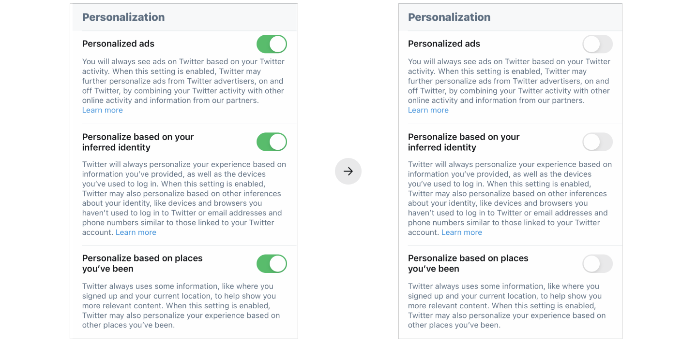

How to avoid filter bubble
EYEOPENER would like to offer you the following four general strategies to pop your filter bubble as much as possible
1. Accepting differences
Don't delete those you disagree with, as the algorithm will cover your feed with posts based on the people and pages you follow which you visit most often.
Try to follow accounts that you disagree with so you start to see a different perspective on the story than you are used to.
2. Turn off personalization
Twitter's personalisation settings invisibly limit the control you have over your data. Therefore, EYEOPENER recommend you to turn off the personalized settings to ensure that Twitter no longer uses algorithms to push you personalized information.
Turn off twitter personalization
3. Widen your sources
Don’t always stick with your go-to socials or websites. Visit a broad range of places online to get a bigger picture, but make sure these sources can be trusted. EYEOPENER recommend the following ten websites based on Australia's News Brand Trust Score.
4. Go offline
It’s always good to chat to friends, family and people in real life, rather than just getting stories from your filter bubble. Don’t trust everything on your feed and remember that other people might think differently.